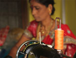
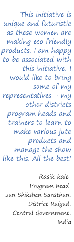

<div class="container">
  <div class="row">
    <div class="col col-md-2">
      
      
    </div>
    <div class="col col-md-10">
      <ngb-tabset type="pills" orientation="vertical">
        <ngb-tab title="Who we are">
          <ng-template ngbTabContent>
            <div class="jumbotron border border-success rounded shadow p-2 mb-4">
              <p>We are the women of Waze. We come from a rural, agricultural area called Wazapur in Raigad District,
                sixty
                kilometers away from the sprawling city of Mumbai in India.
              </p>
              <p>Ours is a story of grit and determination – a journey from diffidence and dependence to confidence and
                self-empowerment. We strongly believe that economic independence is the first step towards self-
                reliance
                and
                empowerment. Although we have come a long way from where we started, we believe that we have the
                confidence
                and skills to achieve much more.</p>
            </div>
          </ng-template>
        </ngb-tab>
        <ngb-tab>
          <ng-template ngbTabTitle>Our Impetus</ng-template>
          <ng-template ngbTabContent>
            <div class="jumbotron border border-success rounded shadow p-2 mb-4">
              <p>The WEP (Women Empowerment Program) in Wazapur was started in 2007 by an enthusiastic group of
                volunteers
                from TCS, one of India’s leading software services provider. This corporate social responsibility
                group,
                call
                themselves “Maitree” meaning friendship. They extended a warm hand of friendship to us and led us
                through
                our
                journey of progress.</p>
            </div>
          </ng-template>
        </ngb-tab>
        <ngb-tab>
          <ng-template ngbTabTitle>Spreading our wings</ng-template>
          <ng-template ngbTabContent>
            <div class="jumbotron border border-success rounded shadow p-2 mb-4">
              <p>The long term objective was to make us financially independent. The question was how? After putting
                much
                thought into this, we finally embarked on our artistic journey of creating handicraft products like
                jute
                bags. We spread the word around, and by the end of one year, we were a group of twenty women, even from
                neighboring villages, with their skills honed in embroidery, stitching and craftwork. We received a
                great
                deal of help and support from Women’s India Trust. </p>
              <p>It was now time to go a step ahead, and establish ourselves in a place which could convert our art
                into
                much
                needed income. That saw the birth of Gram Vikas Abhiyaan Kendra established by TCS Maitree.</p>
            </div>
          </ng-template>
        </ngb-tab>
        <ngb-tab>
          <ng-template ngbTabTitle>Bags and much more!</ng-template>
          <ng-template ngbTabContent>
            <div class="jumbotron border border-success rounded shadow p-2 mb-4">
              <p>We have been utilizing our creative capabilities to make beautiful, environment-friendly bags of
                denim,
                silk, cotton and even paper! Our bags have been much appreciated by whoever has seen them, but our
                enthusiasm
                doesn’t stop there. We are extending our products to include other household items like cushion covers,
                curtains, wall hangings and aprons!</p>
            </div>
          </ng-template>
        </ngb-tab>
        <ngb-tab>
          <ng-template ngbTabTitle>The road ahead</ng-template>
          <ng-template ngbTabContent>
            <div class="jumbotron border border-success rounded shadow p-2 mb-4">
              <p>The transition from being just house-wives in a rural agricultural area of India to being part of a
                small
                scale industry and contributing to our family income has boosted our confidence multi-fold and made us
                part
                of a larger family, our team! But we know we want to do more than this! Thanks to our wonderful team
                dynamics
                and skill, we are confident of taking up bulk orders and delivering in time. We are WOW – Women
                Organization
                Waze – Raring to Go!</p>
            </div>
          </ng-template>
        </ngb-tab>
      </ngb-tabset>
    </div>
  </div>
</div>